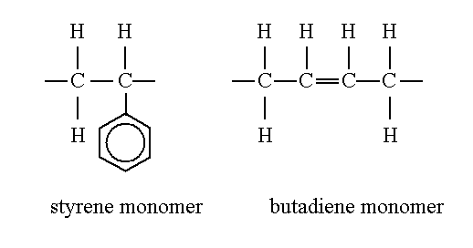
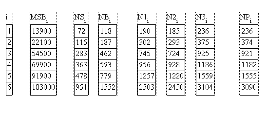

The phase behavior and the microstructure of block copolymers
depends
on the volume
taken up by each block. Hence a symmetric diblock copolymer consists
of two coupled
chains filling the same volume. Since the monomers usually differ in
size, this means that
the number of monomers within each of the blocks differs. As an example
we will study
polystyrene-polybutadiene (PS-PB).
The styrene and butadiene monomers

contain 8 H and 8 C atoms and 4 C and 6 H atoms, respectively.
Molar
masses of the monomers
are
With the help of the densities of the homopolymersMS = 104.1 g
MB = 54.1 g
we can calculate the molar volume of the S and B monomers:ρPS = 1.05 g/cm3
ρPB = 0.89 g/cm3
vS = MS / ρPS vS = 99.2 cm3
vB = MB / ρPB vB = 60.8 cm3
From this relation we obtain the ratio of the S and B chainlengthNS vS = Vblock = NB vB
i.e. there is an excess of 40% B monomers necessary, so that the S- and B-blocks take up the same volume!xSB = NS/NB = vB/vS xSB = 0.613 (1)
Finally, the total molar mass of PS-PB is given by:
Even if there are no more detailed numbers given, we still have enough information now to determine the detailedM = NS MS + NB MB (2)
NB = M / (xSB MS + MB)
NS = xSB NB
N1 = NS + NB
This corresponds to introducing a mean molar volumeN2 = 2 sqrt{NS NB}
and N2 can be rewritten asv = sqrt{vS vB}
This way we can replace the unequal volumina and chain lengths by an effective completely symmetric copolymerN2 = {NS vS + NB vB} / v = {NS sqrt(vS/vB) + NB sqrt(vB/vS)} = {NS sqrt(ρB/ρS) + NB sqrt(ρS/ρB)}
Ref: Wiesner and coworkers, Macromolecules 34, 2001 on P(I-b-EO) bcps.
If a whole series of block copolymers containing always one of the blocks is to be compared, the degree of polymeriztion can be defined with respect to the common block (here B):
A comparison of all values as well as the values obtained in [Papadakis] are shown below for a series of PS-PBN3 = {NS vS + NB vB} / vB

Table 1
ref Papadakis et al., Europhys. Lett.